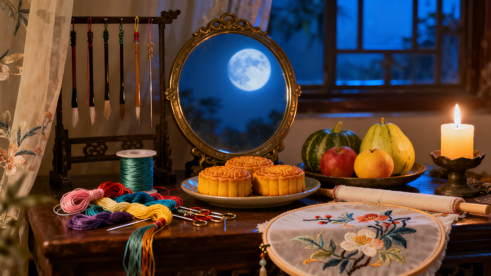

七夕节，又称乞巧节，是中国传统节日中最具浪漫色彩的一个节日。源于牛郎织女鹊桥相会的传说，女子们在这一天乞求智慧和巧艺，更乞求美满姻缘。2006年，七夕节被列入第一批国家级非物质文化遗产名录。
七夕节源于汉代，与牛郎织女的爱情传说紧密联系。传说天帝的孙女织女擅长织布，与人间牛郎相爱，触怒天帝被银河隔开，每年七月初七才被允许鹊桥相会一次。女子们在这一天乞求灵巧的手艺，被称为"乞巧节"。2006年被列入国家级非遗。
七夕的传统食物称为"巧果"，是用面粉、糖、芝麻等制成的花式点心。不同地区还有吃巧芽面（山东）、吃巧酥（浙江）、吃云面（福建）等习俗。瓜果也是七夕的常见供品。
秦观《鹊桥仙》：纤云弄巧，飞星传恨，银汉迢迢暗度。金风玉露一相逢，便胜却人间无数。柔情似水，佳期如梦，忍顾鹊桥归路。两情若是久长时，又岂在朝朝暮暮。
